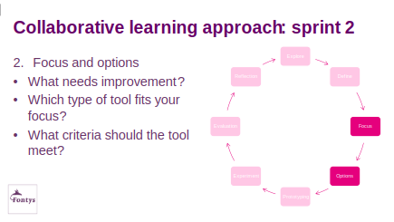

Focus & Options

Discuss in groups (30 min.)
- What exactly needs improvement?(5 min.)
(Describe it in one sentence.)
- What type of tool fits your focus?(5 min.)
(A conversation tool? checklist? reflection card? onboarding version?…)
- Which parts of the Vitality Tool could help address this challenge?(10 min.)
(Which questions, which themes, which elements of the dialogue?)
- What criteria must the tool meet?(10 min.)
(e.g., short, easy to use, supports dialogue, fits HR cycle, focuses on autonomy, protects workload…)